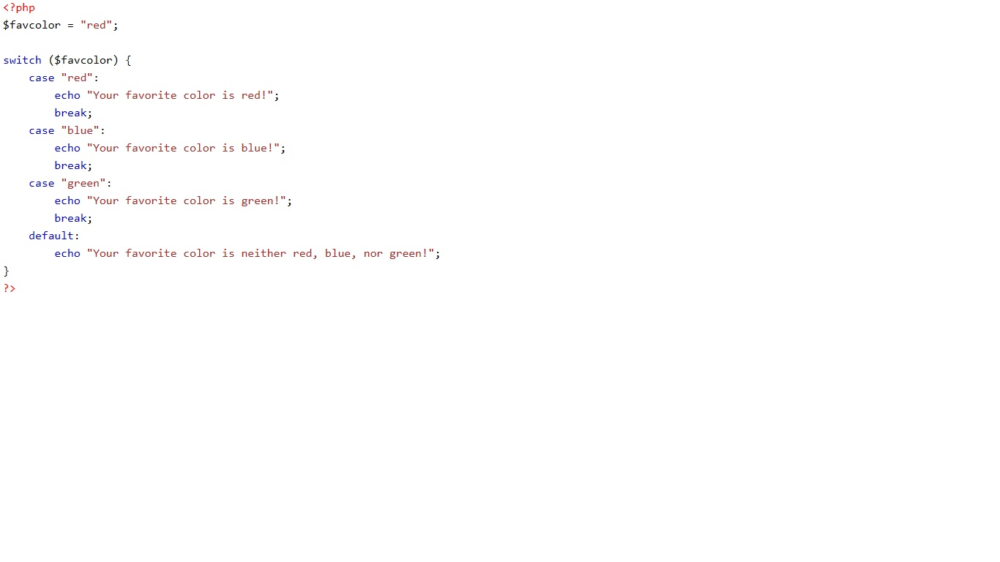

Trabalho Shitch
Shitch PHP
O switch funciona como uma série de if juntos, testando valores para uma variável ou expressão. No entanto o switch trabalha basicamente com o operador de igualdade. Então em casos que devemos testar se nossa variável, ou expressão, é igual a uma série de valores, o switch é uma boa saída.
Ao utilizarmos o switch informamos a variável ou expressão que será testada em cada uma das cláusulas (case) até que seja encontrada uma cláusula em que seja verdadeira. Quando isto ocorre às instruções dentro do bloco de código da estrutura case é executado até encontrar a instrução break, se nenhuma cláusula for verdadeira a instrução default será executada.
O break serve como uma pausa, se não ouver o break o switch não vai parar na cláusula (case) que for verdadeira.
Exemplo usando o Shitch
